Chapter 1 VARs and IRFs: the basics
Often, impulse response functions (IRFs) are generated in the context of vectorial autoregressive (VAR) models. This section presents these models and show how they can be used to compute IRFs.
1.1 Definition of VARs (and SVARMA) models
Definition 1.1 ((S)VAR model) Let \(y_{t}\) denote a \(n \times1\) vector of (endogenous) random variables. Process \(y_{t}\) follows a \(p^{th}\)-order (S)VAR if, for all \(t\), we have \[\begin{eqnarray} \begin{array}{rllll} VAR:& y_t &=& c + \Phi_1 y_{t-1} + \dots + \Phi_p y_{t-p} + \varepsilon_t,\\ SVAR:& y_t &=& c + \Phi_1 y_{t-1} + \dots + \Phi_p y_{t-p} + B \eta_t, \end{array} \tag{1.1} \end{eqnarray}\] with \(\varepsilon_t = B\eta_t\), where \(\{\eta_{t}\}\) is a white noise sequence whose components are mutually and serially independent, and that satisfies \(\mathbb{V}ar(\eta_t)=Id\).
The first line of Eq. (1.1) corresponds to the reduced-form of the VAR model (structural form for the second line). While the structural shocks (the components of \(\eta_t\)) are mutually uncorrelated, this is not the case of the innovations, that are the components of \(\varepsilon_t\). However, in both cases, vectors \(\eta_t\) and \(\varepsilon_t\) are serially uncorrelated (through time).
Notice that \(\mathbb{V}ar(\eta_t)=Id\) and \(\varepsilon_t = B\eta_t\) jointly imply that \[ \Omega :=\mathbb{V}ar(\varepsilon_t)=\mathbb{V}ar(B\eta_t)= B \mathbb{V}ar(\eta_t) B'=BB'. \]
Eq. (1.1) can also be rewritten using the lag operator \(L\), which gives:1 \[ y_t = c + \Phi(L) y_{t} + \varepsilon_t, \] where \(\Phi(L)=\Phi_1 L + \dots + \Phi_p L^p\).
As is the case for univariate models, VARs can be extended with MA terms in \(\eta_t\), giving rise to VARMA models:
Definition 1.2 ((S)VARMA model) Let \(y_{t}\) denote a \(n \times1\) vector of random variables. Process \(y_{t}\) follows a VARMA model of order (p,q) if, for all \(t\), we have \[\begin{eqnarray} \begin{array}{rllll} VARMA:& y_t &=& c + \Phi_1 y_{t-1} + \dots + \Phi_p y_{t-p} + \\ &&&\varepsilon_t + \Theta_1\varepsilon_{t-1} + \dots + \Theta_q \varepsilon_{t-q},\\ SVARMA:& y_t &=& c + \Phi_1 y_{t-1} + \dots + \Phi_p y_{t-p} + \\ &&& B_0 \eta_t + B_1 \eta_{t-1} + \dots + B_q \eta_{t-q}, \end{array} \tag{1.2} \end{eqnarray}\] with \(\varepsilon_t = B_0\eta_t\), and \(B_j = \Theta_j B_0\), for \(j \ge 0\) (with \(\Theta_0=Id\)), where \(\{\eta_{t}\}\) is a white noise sequence whose components are are mutually and serially independent.
1.2 IRFs in SVARMA
One of the main objectives of macro-econometrics is to derive IRFs, that represent the dynamic effects of structural shocks (components of \(\eta_t\)) though the system of variables \(y_t\).
Formally, an IRF is a difference in conditional expectations: \[\begin{equation} \boxed{\Psi_{i,j,h} = \mathbb{E}(y_{i,t+h}|\eta_{j,t}=1) - \mathbb{E}(y_{i,t+h})} \tag{1.3} \end{equation}\] (effect on \(y_{i,t+h}\) of a one-unit shock on \(\eta_{j,t}\)).
IRFs closely relate to the Wold decomposition of \(y_t\). Indeed, if the dynamics of process \(y_t\) can be described as a VARMA model (which includes the case of VAR models), and if \(y_t\) is covariance stationary (see Def. 11.1), then \(y_t\) admits the following infinite MA representation (or Wold decomposition): \[\begin{equation} \boxed{y_t = \mu + \sum_{i=0}^\infty \Psi_{i} \eta_{t-i}.} \tag{1.4} \end{equation}\] or, shifted by \(h\) periods: \[\begin{eqnarray*} y_{t+h} &=& \mu + \sum_{i=0}^\infty \Psi_{i} \eta_{t+h-i}\\ &=& \mu + \underbrace{\sum_{i=0}^{h-1} \Psi_{i} \eta_{t+h-i}}_{\mbox{Effect of }\eta_{t+1},\dots,\eta_{t+h}} + \underbrace{\Psi_{h} \eta_{t}}_{\mbox{Effect of }\eta_{t}} + \underbrace{\sum_{i=h+1}^\infty \Psi_{i} \eta_{t+h-i}}_{\mbox{Effect of }\eta_{t-1},\eta_{t-2,\dots}}. \end{eqnarray*}\]
With these notations, we get \(\mathbb{E}(y_{i,t+h}|\eta_{j,t}=1) = \mu_i + \Psi_{i,j,h}\), where \(\Psi_{i,j,h}\) is the component \((i,j)\) of matrix \(\Psi_h\) and \(\mu_i\) is the \(i^{th}\) entry of vector \(\mu\). Since we also have \(\mathbb{E}(y_{i,t+h})=\mu_i\), we obtain Eq. (1.3).
Example 1.1 (IRF of a univariate AR model) To fix ideas, consider a simple univariate AR(1) process: \[ y_t = \phi y_{t-1} + b \eta_t, \quad \eta_t \sim \text{i.i.d. }\mathcal{N}(0,1). \]
We assume \(|\phi| < 1\) so that the process is covariance stationary.
Iterating forward: \[ y_{t+h} = b \eta_{t+h} + \phi b \eta_{t+h-1} + \dots + \phi^h b \eta_t + \phi^{h+1} y_{t-1}. \] If the \(\eta_t\)’s are independent, we have \(\mathbb{E}(\eta_{t+h}|\eta_t = 1)=0\) if \(h \ne 0\) (and 1 otherwise). Therefore: \[ \mathbb{E}(y_{t+h}|\eta_t = 1) - \mathbb{E}(y_{t+h}) = \phi^h b. \] Hence, the impulse response function (IRF) at horizon \(h\) is simply $_h = ^h b $.
Code
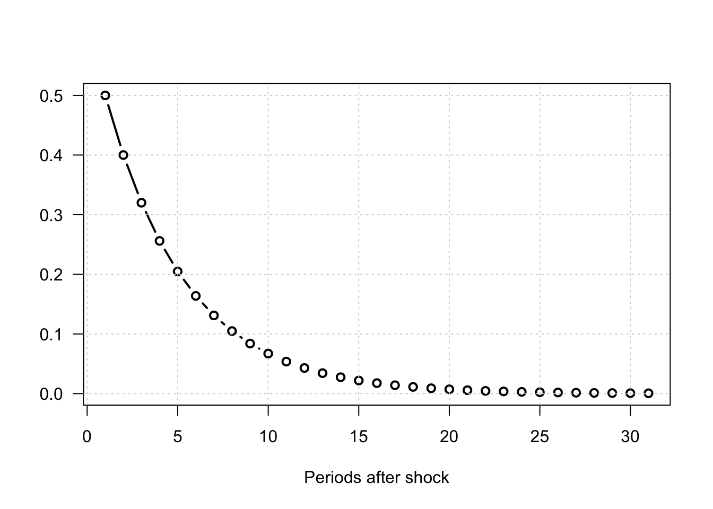
Figure 1.1: Impulse response functions for an AR(1) process: \(y_t = \phi y_{t-1} + b \eta_t\), \(\eta_t \sim i.i.d. \mathcal{N}(0,1)\).
Hence, estimating IRFs amounts to estimating the \(\Psi_h\) matrices. In practice, three main approaches are commonly used:
Calibrate and solve a (purely structural) Dynamic Stochastic General Equilibrium (DSGE) model at first order (linear approximation). The resulting solution can be written in the form of Eq. (1.4).
Directly estimate the \(\Psi_h\) matrices using projection methods (see Section 8).
Approximate the infinite moving-average representation by estimating a parsimonious model, such as a VAR(MA) model (see Section 1.4). Once a (structural) VARMA representation is obtained, Eq. (1.4) follows immediately from the result stated in the next proposition.
Proposition 1.1 (IRF of an ARMA(p,q) process) If \(y_t\) follows the VARMA model described in Def. 1.2, then the matrices \(\Psi_h\) appearing in Eq. (1.4) can be computed recursively as follows:
- Set \(\Psi_{-1}=\dots=\Psi_{-p}=0\).
- For \(h \ge 0\), (recursively) apply: \[ \Psi_h = \Phi_1 \Psi_{h-1} + \dots + \Phi_p \Psi_{h-p} + \Theta_h B_0, \] with \(\Theta_0 = Id\) and \(\Theta_h = 0\) for \(h>q\).
Proof. This is obtained by applying the operator \(\frac{\partial}{\partial \eta_{t}}\) on both sides of Eq. (1.2).
Typically, consider the VAR(2) case. The first steps of the algorithm mentioned in the last bullet point are as follows: \[\begin{eqnarray*} y_t &=& \Phi_1 {\color{blue}y_{t-1}} + \Phi_2 y_{t-2} + B \eta_t \\ &=& \Phi_1 {\color{blue}(\Phi_1 y_{t-2} + \Phi_2 y_{t-3} + B \eta_{t-1})} + \Phi_2 y_{t-2} + B \eta_t \\ &=& B \eta_t + \Phi_1 B \eta_{t-1} + (\Phi_2 + \Phi_1^2) {\color{red}y_{t-2}} + \Phi_1\Phi_2 y_{t-3} \\ &=& B \eta_t + \Phi_1 B \eta_{t-1} + (\Phi_2 + \Phi_1^2) {\color{red}(\Phi_1 y_{t-3} + \Phi_2 y_{t-4} + B \eta_{t-2})} + \Phi_1\Phi_2 y_{t-3} \\ &=& \underbrace{B}_{=\Psi_0} \eta_t + \underbrace{\Phi_1 B}_{=\Psi_1} \eta_{t-1} + \underbrace{(\Phi_2 + \Phi_1^2)B}_{=\Psi_2} \eta_{t-2} + f(y_{t-3},y_{t-4}). \end{eqnarray*}\]
In particular, we have \(B = \Psi_0\). Matrix \(B\) indeed captures the contemporaneous impact of \(\eta_t\) on \(y_t\). That is why matrix \(B\) is sometimes called impulse matrix.
Example 1.2 (IRFs of an SVAR model) Consider the following VAR(2) model: \[\begin{eqnarray} \quad y_t &=& \underbrace{\left[\begin{array}{cc} 0.6 & 0.2 \\ 0 & 0.5 \end{array}\right]}_{=\Phi_1} y_{t-1} + \underbrace{\left[\begin{array}{cc} -0.1 & 0.1 \\ 0.2 & 0.3 \end{array}\right]}_{=\Phi_2}y_{t-2} + \underbrace{\left[\begin{array}{cc} 0.5 & 1.5 \\ -1 & 0.8 \end{array}\right]}_{=B} \eta_{t}. \tag{1.5} \end{eqnarray}\]
We can use function simul.VARMA of package IdSS to produce IRFs (using indic.IRF=1 in the list of arguments):
Code
library(IdSS)
# ---- Specify model: ----
Phi <- array(NaN,c(2,2,2)) # (2,2,2) for (n,n,p)
Phi[,,1] <- matrix(c(.6,0,.2,.5),2,2)
Phi[,,2] <- matrix(c(-.1,.2,.1,.3),2,2)
c <- c(1,2)
B <- matrix(c(.5,-1,1.5,.8),2,2)
Model <- list(c = c,Phi = Phi,B = B)
# ---- Define first shock: ----
eta0 <- c(1,0)
res.sim.1 <- simul.VARMA(Model,nb.sim=30,eta0=eta0,indic.IRF=1)
# ---- Define second shock: ----
eta0 <- c(0,1)
res.sim.2 <- simul.VARMA(Model,nb.sim=30,eta0=eta0,indic.IRF=1)
# ---- Prepare plots: ----
par(plt=c(.15,.95,.25,.8)) # define margins
par(mfrow=c(2,2)) # 2 rows and 2 columns of plots
for(i in 1:2){
if(i == 1){res.sim <- res.sim.1}else{res.sim <- res.sim.2}
for(j in 1:2){
plot(res.sim$Y[j,],las=1,
type="l",lwd=3,xlab="",ylab="",
main=paste("Resp. of y",j,
" to a 1-unit increase in η",i,sep=""))
abline(h=0,col="grey",lty=3)
}}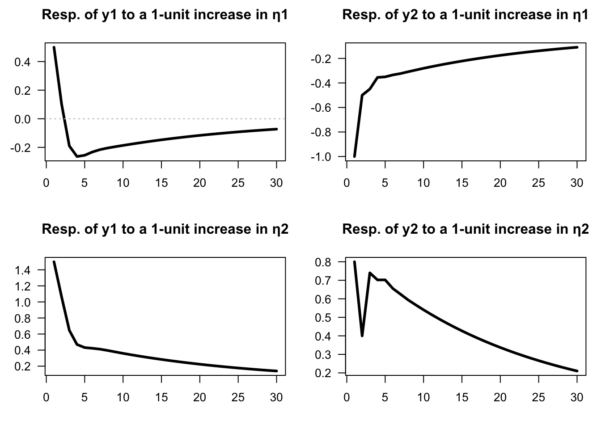
Figure 1.2: Impulse response functions (VAR(2) specified above).
The same type of output would be obtained by using the function simul.VAR of package IdSS:2
Example 1.3 (IRFs of an SVARMA model) Consider the following VARMA(1,1) model: \[\begin{eqnarray} \quad y_t &=& \underbrace{\left[\begin{array}{cc} 0.5 & 0.3 \\ -0.4 & 0.7 \end{array}\right]}_{\Phi_1} y_{t-1} + \\ && \underbrace{\left[\begin{array}{cc} 1 & 2 \\ -1 & 1 \end{array}\right]}_{B}\eta_t + \underbrace{\left[\begin{array}{cc} 0.4 & 0 \\ -1 & -0.5 \end{array}\right]}_{\Theta_1} \underbrace{\left[\begin{array}{cc} 1 & 2 \\ -1 & 1 \end{array}\right]}_{B}\eta_{t-1}. \tag{1.6} \end{eqnarray}\]
We can use function simul.VARMA of package IdSS to produce IRFs (using indic.IRF=1 in the list of arguments):
Code
library(IdSS)
# ---- Specify model: ----
Phi <- array(NaN,c(2,2,1)) # (2,2,1) for (n,n,p)
Phi[,,1] <- matrix(c(.5,-.4,.3,.7),2,2)
p <- dim(Phi)[3]
Theta <- array(NaN,c(2,2,1))
Theta[,,1] <- matrix(c(.4,-1,0,-.5),2,2)
q <- dim(Theta)[3]
c <- rep(0,2)
B <- matrix(c(1,-1,2,1),2,2)
Model <- list(c = c,Phi = Phi,Theta = Theta,B = B)
# ---- Define first shock: ----
eta0 <- c(1,0)
res.sim.1 <- simul.VARMA(Model,nb.sim=30,eta0=eta0,indic.IRF=1)
# ---- Define second shock: ----
eta0 <- c(0,1)
res.sim.2 <- simul.VARMA(Model,nb.sim=30,eta0=eta0,indic.IRF=1)
par(plt=c(.15,.95,.25,.8))
par(mfrow=c(2,2))
for(i in 1:2){
if(i == 1){res.sim <- res.sim.1}else{res.sim <- res.sim.2}
for(j in 1:2){
plot(res.sim$Y[j,],las=1,
type="l",lwd=3,xlab="",ylab="",
main=paste("Resp. of y",j,
" to a 1-unit increase in η",i,sep=""))
abline(h=0,col="grey",lty=3)
}}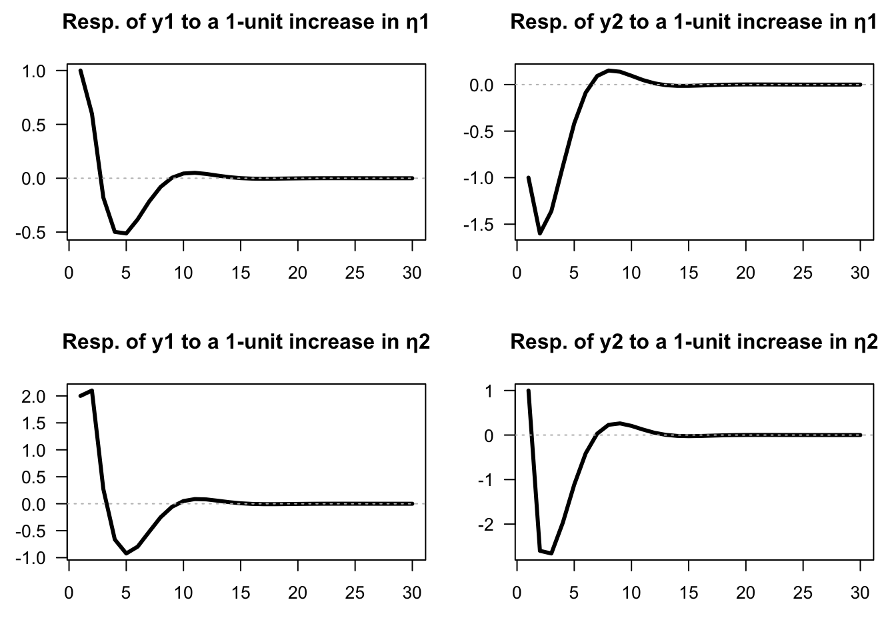
Figure 1.3: Impulse response functions (SVARMA(1,1) specified above).
1.3 Covariance-stationary VARMA models
Let’s come back to the infinite MA case (Eq. (1.4)): \[ y_t = \mu + \sum_{h=0}^\infty \Psi_{h} \eta_{t-h}. \] For \(y_t\) to be covariance-stationary (and ergodic for the mean), it has to be the case that \[\begin{equation} \sum_{i=0}^\infty \|\Psi_i\| < \infty, \tag{1.7} \end{equation}\] where \(\|A\|\) denotes a norm of the matrix \(A\) (e.g. \(\|A\|=\sqrt{tr(AA')}\)). This notably implies that if \(y_t\) is stationary (and ergodic for the mean), then \(\|\Psi_h\|\rightarrow 0\) when \(h\) gets large.
What should be satisfied by \(\Phi_k\)’s and \(\Theta_k\)’s for a VARMA-based process (Eq. (1.2)) to be stationary? The conditions will be similar to that we have in the univariate case. Let us introduce the following notations: \[\begin{eqnarray} y_t &=& c + \underbrace{\Phi_1 y_{t-1} + \dots +\Phi_p y_{t-p}}_{{\color{blue}\mbox{AR component}}} + \\ &&\underbrace{B \eta_t - \Theta_1 B \eta_{t-1} - \dots - \Theta_q B \eta_{t-q}}_{{\color{red}\mbox{MA component}}} \nonumber\\ &\Leftrightarrow& \underbrace{ {\color{blue}(I - \Phi_1 L - \dots - \Phi_p L^p)}}_{= {\color{blue}\Phi(L)}}y_t = c + \underbrace{ {\color{red}(I + \Theta_1 L + \ldots + \Theta_q L^q)}}_{={\color{red}\Theta(L)}} B \eta_{t}. \nonumber \tag{1.8} \end{eqnarray}\]
Process \(y_t\) is stationary iff the roots of \(\det(\Phi(z))=0\) are strictly outside the unit circle or, equivalently, iff the eigenvalues of \[\begin{equation} \underbrace{\Phi}_{np \times np} = \left[\begin{array}{cccc} \Phi_{1} & \Phi_{2} & \cdots & \Phi_{p}\\ I & 0 & \cdots & 0\\ 0 & \ddots & 0 & 0\\ 0 & 0 & I & 0\end{array}\right] \tag{1.9} \end{equation}\] lie strictly within the unit circle. Hence, as is the case for univariate processes, the covariance-stationarity of a VARMA model depends only on the specification of its AR part.
Let’s derive the first two unconditional moments of a (covariance-stationary) VARMA process.
Eq. (1.8) gives \(\mathbb{E}(\Phi(L)y_t)=c\), therefore \(\Phi(1)\mathbb{E}(y_t)=c\), or \[ \mathbb{E}(y_t) = (I - \Phi_1 - \dots - \Phi_p)^{-1}c. \] The autocovariances of \(y_t\) can be deduced from the infinite MA representation (Eq. (1.4)). We have: \[ \gamma_j \equiv \mathbb{C}ov(y_t,y_{t-j}) = \sum_{i=j}^\infty \Psi_i \Psi_{i-j}'. \] Indeed: \[\begin{eqnarray*} \mathbb{C}ov(y_t,y_{t-j}) &=& \mathbb{E}\left(\left[\sum_{h=0}^\infty \Psi_{h} \eta_{t-h}\right]\left[\sum_{h=0}^\infty \Psi_{h} \eta_{t-j-h}\right]'\right)\\ &=& \mathbb{E}\left(\left[\sum_{i=0}^{j-1} \Psi_{i} \eta_{t-i}+\sum_{i=j}^\infty \Psi_{i} \eta_{t-i}\right]\left[\sum_{i=j}^\infty \Psi_{i-j} \eta_{t-i}\right]'\right)\\ &=&\mathbb{E}\left(\sum_{i=j}^\infty \Psi_{i} \eta_{t-i}\eta_{t-i}'\Psi_{i-j}'\right)= \sum_{i=j}^\infty \Psi_i \Psi_{i-j}'. \end{eqnarray*}\] (Remark: This infinite sum exists as soon as Eq. (1.7) is satisfied.)
Conditional means and autocovariances can also be deduced from Eq. (1.4). For \(0 \le h\) and \(0 \le h_1 \le h_2\): \[\begin{eqnarray*} \mathbb{E}_t(y_{t+h}) &=& \mu + \sum_{k=0}^\infty \Psi_{k+h} \eta_{t-k} \\ \mathbb{C}ov_t(y_{t+1+h_1},y_{t+1+h_2}) &=& \sum_{k=0}^{h_1} \Psi_{k}\Psi_{k+h_2-h_1}', \end{eqnarray*}\] where \(\mathbb{E}_t\) and \(\mathbb{C}ov_t\) denote the expectation and covariance conditional on \(\{\eta_t,\eta_{t-1},\dots\}\).3
The previous formula implies in particular that the forecasting error \(y_{t+h} - \mathbb{E}_t(y_{t+h})\) has a variance equal to: \[ \boxed{\mathbb{V}ar_t(y_{t+h}) = \sum_{k=0}^{h-1} \Psi_{k}\Psi_{k}'.} \] Because the components of \(\eta_t\) are mutually and serially independent (and therefore uncorrelated), we have: \[ \mathbb{V}ar(\Psi_k \eta_{t-k}) = \mathbb{V}ar\left(\sum_{i=1}^n \psi_{k,i} \eta_{i,t-k}\right) = \sum_{i=1}^n \psi_{k,i}\psi_{k,i}', \] where \(\psi_{k,i}\) denotes the \(i^{th}\) column of \(\Psi_k\). This suggests the following decomposition of the variance of the forecast error (called variance decomposition): \[ \mathbb{V}ar_t(y_{t+h}) = \sum_{i=1}^n \underbrace{\sum_{k=0}^{h-1}\psi_{k,i}\psi_{k,i}'.}_{\mbox{Contribution of $\eta_{i,t}$}} \]
To illustrate, let us use the VAR(2) model proposed above, in Example 1.2. As explained above, the variance decomposition directly results from the knowledge of IRFs (shown in Figure 1.2):
Example 1.4 (Variance decomposition in the context of a VAR(2) defined.) The chunk below computes, for different horizons, the shares of the variances of the two variables that are accounted for by each of the two components of \(\eta_t\) in the context of the model proposed in Example 1.2.
Code
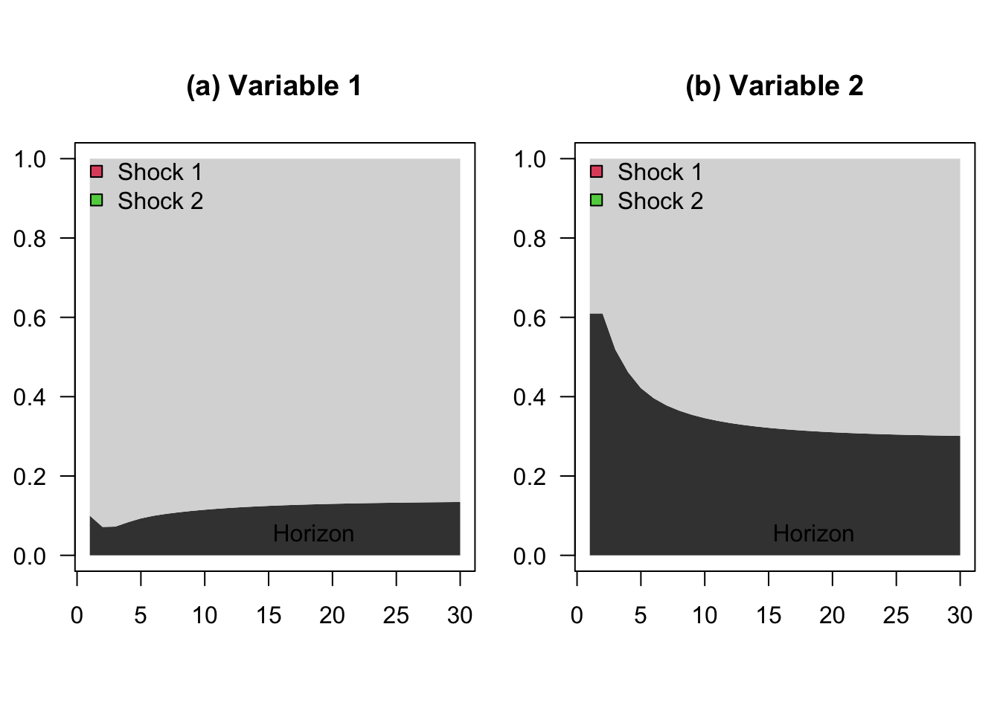
Figure 1.4: Variance decomposition of a VAR(2) model.
1.4 VAR estimation
This section discusses the estimation of VAR models.4 Eq. (1.1) can be written: \[ y_{t}=c+\Phi(L)y_{t-1}+\varepsilon_{t}, \] with \(\Phi(L) = \Phi_1 + \Phi_2 L + \dots + \Phi_p L^{p-1}\), and where the reduced-form shocks (\(\varepsilon_{t}\)) are white noise shocks.5
Using Hamilton (1994)’s notations, denote with \(\Pi\) the matrix \(\left[\begin{array}{ccccc} c & \Phi_{1} & \Phi_{2} & \ldots & \Phi_{p}\end{array}\right]'\) and with \(x_{t}\) the vector \(\left[\begin{array}{ccccc} 1 & y'_{t-1} & y'_{t-2} & \ldots & y'_{t-p}\end{array}\right]'\), we have: \[\begin{equation} y_{t}= \Pi'x_{t} + \varepsilon_{t}. \tag{1.10} \end{equation}\]
The previous representation is convenient to discuss the estimation of the VAR model, as parameters are gathered in two matrices only: \(\Pi\) and \(\Omega\) (where \(\Omega = \mathbb{V}ar (\varepsilon_t)\)).
1.4.1 Maximum Likelihood Estimation (MLE) when the shocks are Gaussian
Let us start with the case where the shocks are i.i.d. Gaussian. We then have: \[ y_{t}\mid y_{t-1},y_{t-2},\ldots\sim \mathcal{N}(c+\Phi_{1}y_{t-1}+\ldots\Phi_{p}y_{t-p},\Omega). \]
Proposition 1.2 (MLE of a Gaussian VAR) If \(y_t\) follows a covariance-stationary VAR(\(p\)) (see Definition 1.1), and if \(\varepsilon_t \sim \,i.i.d.\,\mathcal{N}(0,\Omega)\), then the ML estimate of \(\Pi\), denoted by \(\hat{\Pi}\) (see Eq. (1.10)), is given by \[\begin{equation} \hat{\Pi}=\left[\sum_{t=1}^{T}x_{t}x'_{t}\right]^{-1}\left[\sum_{t=1}^{T}y_{t}'x_{t}\right]= (\mathbf{X}'\mathbf{X})^{-1}\mathbf{X}'\mathbf{y}, \tag{1.11} \end{equation}\] where \(\mathbf{X}\) is the \(T \times (1+np)\) matrix whose \(t^{th}\) row is \(x_t\) and where \(\mathbf{y}\) is the \(T \times n\) matrix whose \(t^{th}\) row is \(y_{t}'\).
That is, the \(i^{th}\) column of \(\hat{\Pi}\) (\(b_i\), say) is the OLS estimate of \(\beta_i\), where: \[\begin{equation} y_{i,t} = \beta_i'x_t + \varepsilon_{i,t}, \tag{1.12} \end{equation}\] (i.e., \(\beta_i' = [c_i,\phi_{i,1}',\dots,\phi_{i,p}']'\)).
The ML estimate of \(\Omega\), denoted by \(\hat{\Omega}\), coincides with the sample covariance matrix of the \(n\) series of the OLS residuals in Eq. (1.12), i.e.: \[\begin{equation} \hat{\Omega} = \frac{1}{T} \sum_{i=1}^T \hat{\varepsilon}_t\hat{\varepsilon}_t',\quad\mbox{with } \hat{\varepsilon}_t= y_t - \hat{\Pi}'x_t. \end{equation}\]
The asymptotic distributions of these estimators are the ones resulting from standard OLS formula.
Proof. See Appendix 11.3.
The simplicity of the VAR framework and the tractability of its MLE open the way to convenient econometric testing. Let’s illustrate this with the likelihood ratio test (see Def. 11.2). The maximum value achieved by the MLE is \[ \log\mathcal{L}(Y_{T};\hat{\Pi},\hat{\Omega}) = -\frac{Tn}{2}\log(2\pi)+\frac{T}{2}\log\left|\hat{\Omega}^{-1}\right| -\frac{1}{2}\sum_{t=1}^{T}\left[\hat{\varepsilon}_{t}'\hat{\Omega}^{-1}\hat{\varepsilon}_{t}\right]. \] The last term is: \[\begin{eqnarray*} \sum_{t=1}^{T}\hat{\varepsilon}_{t}'\hat{\Omega}^{-1}\hat{\varepsilon}_{t} &=& \mbox{Tr}\left[\sum_{t=1}^{T}\hat{\varepsilon}_{t}'\hat{\Omega}^{-1}\hat{\varepsilon}_{t}\right] = \mbox{Tr}\left[\sum_{t=1}^{T}\hat{\Omega}^{-1}\hat{\varepsilon}_{t}\hat{\varepsilon}_{t}'\right]\\ &=&\mbox{Tr}\left[\hat{\Omega}^{-1}\sum_{t=1}^{T}\hat{\varepsilon}_{t}\hat{\varepsilon}_{t}'\right] = \mbox{Tr}\left[\hat{\Omega}^{-1}\left(T\hat{\Omega}\right)\right]=Tn. \end{eqnarray*}\] Therefore, the optimized log-likelihood is simply obtained by: \[\begin{equation} \log\mathcal{L}(Y_{T};\hat{\Pi},\hat{\Omega})=-(Tn/2)\log(2\pi)+(T/2)\log\left|\hat{\Omega}^{-1}\right|-Tn/2. \tag{1.13} \end{equation}\]
Having the optimized likelihood in analytical form allows for flexible applications of the likelihood ratio (LR) test (Def. 11.2).
Example 1.5 (Ad-hoc lag selection based on the LR test) Suppose we want to test whether a system of variables follows a VAR(\(p_0\)) process (the null hypothesis) against an alternative specification with \(p_1\) lags, where \(p_1 > p_0\). Let \(\hat{L}_0\) and \(\hat{L}_1\) denote the maximum log-likelihoods obtained under the two specifications, respectively. Under the null hypothesis (\(H_0\): \(p = p_0\)), the LR statistic is given by
\[\begin{equation} \xi^{LR} := 2(\hat{L}_1 - \hat{L}_0) = T \left( \log\left|\hat{\Omega}_1^{-1}\right| - \log\left|\hat{\Omega}_0^{-1}\right| \right) \sim \chi^2\left(n^2(p_1 - p_0)\right). \end{equation}\]
This statistic can be used to determine whether adding lags significantly improves the model fit. However, including too many lags quickly exhausts degrees of freedom: with \(p\) lags, each of the \(n\) equations in the VAR includes \(n \times p\) coefficients plus an intercept term. While adding lags always improves the in-sample fit, it can lead to over-parameterization and deteriorate the model’s out-of-sample predictive performance.
The approach above provides an ad-hoc way to select lag length using LR tests (Def. 11.2). More systematic procedures rely on information criteria, which balance goodness of fit and model parsimony. In the Gaussian case (see Eq. (1.13)), common criteria include: \[\begin{eqnarray*} AIC & = & cst + \log\left|\hat{\Omega}\right| + \frac{2}{T}N \\ BIC & = & cst + \log\left|\hat{\Omega}\right| + \frac{\log T}{T}N, \end{eqnarray*}\] where \(N = p \times n^2\). In these expressions, \(\log|\hat{\Omega}|\) captures the model’s goodness of fit (with smaller values indicating better fit), while the last term is a penalty that increases with the number of estimated parameters.
Example 1.6 (Three-variable VAR model) The following example illustrates how to estimate and analyze a three-variable VAR model using U.S. quarterly data on inflation, the output gap, and the short-term nominal interest rate.
We begin by using the VARselect function from the vars package to determine the optimal lag length for the VAR specification.
Code
library(vars) # provides 'VARselect' function
library(IdSS) # dataset is included here
First.date <- "1959-04-01"
Last.date <- "2015-01-01"
data <- US3var
data <- data[(data$Date >= First.date) & (data$Date <= Last.date), ]
Y <- as.matrix(data[c("infl", "y.gdp.gap", "r")])
VARselect(Y, lag.max = 12)## $selection
## AIC(n) HQ(n) SC(n) FPE(n)
## 11 3 2 11
##
## $criteria
## 1 2 3 4 5 6
## AIC(n) -0.14340897 -0.323002241 -0.39796730 -0.3888482 -0.4110019 -0.5229686
## HQ(n) -0.06661725 -0.188616726 -0.20598799 -0.1392751 -0.1038350 -0.1582079
## SC(n) 0.04658647 0.009489796 0.07702133 0.2286370 0.3489799 0.3795098
## FPE(n) 0.86641130 0.724024392 0.67182519 0.6781505 0.6635579 0.5936165
## 7 8 9 10 11 12
## AIC(n) -0.48840029 -0.50157851 -0.44613801 -0.4950938 -0.5372138 -0.4980589
## HQ(n) -0.06604582 -0.02163024 0.09140405 0.1000420 0.1155158 0.2122645
## SC(n) 0.55657468 0.68589305 0.88383014 0.9773709 1.0777475 1.2593990
## FPE(n) 0.61498914 0.60758020 0.64308309 0.6133871 0.5892917 0.6143270Next, we estimate the VAR model including an exogenous variable — the commodity price index.
Code
p <- 6
exogen <- matrix(data$commo, ncol = 1); colnames(exogen) <- "commo"
estVAR <- VAR(Y, p = p, exogen = exogen) # estimate the VAR model
Phi <- Acoef(estVAR)
eps <- residuals(estVAR)
Omega <- var(eps) # covariance matrix of OLS residuals
B <- t(chol(Omega)) # Cholesky decomposition of Omega (lower triangular)We can now verify whether the estimated VAR is stationary:
Code
## [1] 0.9485855 0.9485855 0.9180083 0.8539724 0.8539724 0.7683116 0.7683116
## [8] 0.7509592 0.7509592 0.7465920 0.7465920 0.7392400 0.7392400 0.6720905
## [15] 0.6720905 0.4474043 0.4474043 0.3904400All eigenvalues have moduli smaller than one, confirming that the system is stationary.
We then compute and display the impulse response functions (IRFs) using the Cholesky identification approach (see Section 2.3), where the impact matrix \(B\) comes from the Cholesky factorization of \(\Omega = \mathbb{V}ar(\varepsilon_t)\).
Code
n <- dim(Y)[2] # number of endogenous variables
par(mfrow = c(n, n))
par(plt = c(.3, .95, .2, .8))
Model <- list(c = c, Phi = Phi, B = B)
names.var <- c("Inflation", "Output gap", "Interest rate")
for (variable in 1:n) {
for (shock in 1:n) {
eta0 <- rep(0, n)
eta0[shock] <- 1
res.sim <- simul.VAR(c = NaN, Phi, B, nb.sim = 30, indic.IRF = 1,
u.shock = eta0)
plot(res.sim[, variable], type = "l", lwd = 2, las = 1,
xlab = "", ylab = ifelse(shock==1,
paste("Resp. of ",
names.var[variable],"...",sep=""),""),
main = ifelse(variable==1,paste("... to shock η", shock, sep = ""),"")
)}
}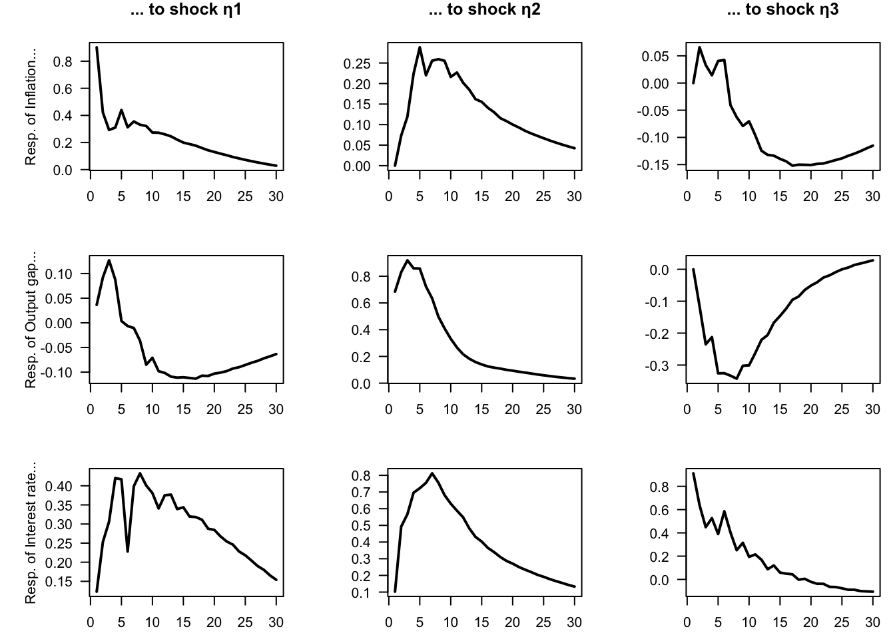
Figure 1.5: Impulse response functions for a 3-variable VAR model estimated on U.S. quarterly data.
Finally, we compute the variance decomposition associated with the same model.
Code
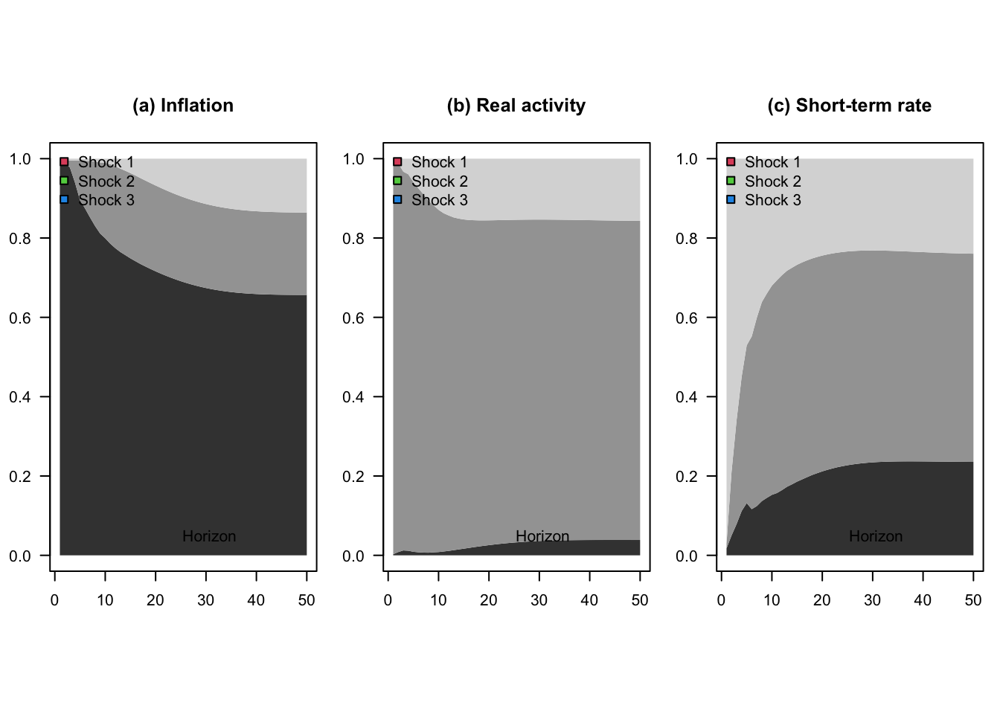
Figure 1.6: Variance decomposition for a 3-variable VAR model estimated on U.S. quarterly data.
1.4.2 Asymptotic distribution of the OLS estimates
As stated by the following proposition, when the shocks \(\varepsilon_t\) are not Gaussian, then the OLS regressions still provide consistent estimates of the model parameters.
Proposition 1.3 (Asymptotic distribution of the OLS estimate of VAR coefficients (for one variable)) If \(y_t\) follows a (covariance-stationary) VAR model, as defined in Definition 1.1, we have: \[ \sqrt{T}(\mathbf{b}_i-\beta_i) = \underbrace{\left[\frac{1}{T}\sum_{t=p}^T x_t x_t' \right]^{-1}}_{\overset{p}{\rightarrow} \mathbf{Q}^{-1}} \underbrace{\sqrt{T} \left[\frac{1}{T}\sum_{t=1}^T x_t\varepsilon_{i,t} \right]}_{\overset{d}{\rightarrow} \mathcal{N}(0,\sigma_i^2\mathbf{Q})}, \] where \(\sigma_i = \mathbb{V}ar(\varepsilon_{i,t})\) and where \(\mathbf{Q} = \mbox{plim }\frac{1}{T}\sum_{t=p}^T x_t x_t'\) is given by: \[\begin{equation} \mathbf{Q} = \left[ \begin{array}{ccccc} 1 & \mu' &\mu' & \dots & \mu' \\ \mu & \gamma_0 + \mu\mu' & \gamma_1 + \mu\mu' & \dots & \gamma_{p-1} + \mu\mu'\\ \mu & \gamma_1 + \mu\mu' & \gamma_0 + \mu\mu' & \dots & \gamma_{p-2} + \mu\mu'\\ \vdots &\vdots &\vdots &\dots &\vdots \\ \mu & \gamma_{p-1} + \mu\mu' & \gamma_{p-2} + \mu\mu' & \dots & \gamma_{0} + \mu\mu' \end{array} \right], \tag{1.14} \end{equation}\] where \(\gamma_j\) is the unconditional autocovariance matrix of order \(j\) of \(y_t\), i.e., \(\gamma_i = \mathbb{C}ov(y_{t},y_{t-j})\).
Proof. See Appendix 11.3.
However, since \(x_t\) correlates to \(\varepsilon_s\) for \(s<t\), the OLS estimator \(\mathbf{b}_i\) of \(\boldsymbol\beta_i\) is biased in small sample. (That is also the case for the ML estimator.) Indeed, denoting by \(\boldsymbol\varepsilon_i\) the \(T \times 1\) vector of \(\varepsilon_{i,t}\)’s, and using the notations of \(b_i\) and \(\beta_i\) introduced in Proposition 1.2, we have: \[\begin{equation} \mathbf{b}_i = \beta_i + (\mathbf{X}'\mathbf{X})^{-1}\mathbf{X}'\boldsymbol\varepsilon_i. \tag{1.15} \end{equation}\]
We have non-zero correlation between \(x_t\) and \(\varepsilon_{i,s}\) for \(s<t\) and, therefore, \(\mathbb{E}[(\mathbf{X}'\mathbf{X})^{-1}\mathbf{X}'\boldsymbol\varepsilon_i] \ne 0\).
However, as stated by Proposition 1.3 when \(y_t\) is covariance stationary, then \(\frac{1}{n}\mathbf{X}'\mathbf{X}\) converges to a positive definite matrix \(\mathbf{Q}\), and \(\frac{1}{n}\mathbf{X}'\boldsymbol\varepsilon_i\) converges to 0. Hence \(\mathbf{b}_i \overset{p}{\rightarrow} \beta_i\).
The next proposition extends Proposition 1.3 by incorporating the covariances between different \(\beta_i\)’s and by characterizing the asymptotic distribution of the ML estimator of \(\Omega\). In other words, it delivers the full asymptotic distribution of the model parameters. This result is particularly useful for Monte Carlo procedures that require drawing from this asymptotic distribution (see Section 3.1).
Proposition 1.4 (Asymptotic distribution of the OLS estimates) If \(y_t\) follows a VAR model, as defined in Definition 1.1, we have: \[\begin{equation} \sqrt{T}\left[ \begin{array}{c} vec(\hat\Pi - \Pi)\\ vec(\hat\Omega - \Omega) \end{array} \right] \sim \mathcal{N}\left(0, \left[ \begin{array}{cc} \Omega \otimes \mathbf{Q}^{-1} & 0\\ 0 & \Sigma_{22} \end{array} \right]\right), \tag{1.16} \end{equation}\] where the component of \(\Sigma_{22}\) corresponding to the covariance between \(\hat\sigma_{i,j}\) and \(\hat\sigma_{k,l}\) (for \(i,j,l,m \in \{1,\dots,n\}^4\)) is equal to \(\sigma_{i,l}\sigma_{j,m}+\sigma_{i,m}\sigma_{j,l}\).
Proof. See, e.g., Hamilton (1994), Appendix of Chapter 11.
In practice, to use the previous proposition (for instance to implement Monte-Carlo simulations), \(\Omega\) is replaced with \(\hat{\Omega}\), \(\mathbf{Q}\) is replaced with \(\hat{\mathbf{Q}} = \frac{1}{T}\sum_{t=p}^T x_t x_t'\) and \(\Sigma\) with the matrix whose components are of the form \(\hat\sigma_{i,l}\hat\sigma_{j,m}+\hat\sigma_{i,m}\hat\sigma_{j,l}\), where the \(\hat\sigma_{i,l}\)’s are the components of \(\hat\Omega\).
1.4.3 Specification tests
After estimating a VAR, it is important to check that the model assumptions hold. In particular, we verify:
Stationarity of the data (often checked before estimation). If the variables are non-stationary and not cointegrated, the asymptotic distributions of the estimates are not valid and standard inference (including likelihood-based tests) breaks down. In practice, one typically inspects unit-root tests or relies on economic knowledge about integration and cointegration properties. \(\Rightarrow\) Remedy: transform the data to make them stationary (removing deterministic trends, or using differences), or use Vector Error-Correction Models (VECM).
Absence of residual autocorrelation. If residuals are serially correlated, the dynamic specification of the VAR is inadequate (e.g., too few lags). This leads to biased estimates of the constant and the \(\Phi_i\) matrices and, consequently, biased impulse response functions. \(\Rightarrow\) Remedy: increase the lag length or reconsider the model specification (e.g., adding variables, or transforming the variables).
Homoskedasticity. If residuals exhibit heteroskedasticity, OLS estimates remain consistent under mild conditions, but they are no longer efficient, and standard errors become unreliable in finite samples in particular. If they are based on the asymptotic distribution, confidence intervals for coefficients and impulse responses may be misleading. \(\Rightarrow\) Remedy: use heteroskedasticity-robust inference (e.g., bootstrapped inference methods, see Chapter 3), or adopt models allowing for time-varying volatility (e.g., VAR-GARCH, stochastic-volatility VAR).
Normality of residuals. Non-normality does not affect consistency of OLS estimates, but it weakens the validity of inference and ML-based tests, especially in small samples. Confidence bands for impulse responses may be distorted under heavy tails or skewness. \(\Rightarrow\) Remedy: use bootstrap inference for hypothesis testing and IRFs.
Example 1.7 (Bivariate model for Switzerland) In this example, we consider a bivariate model capturing the joint dynamics of Swiss inflation and GDP growth rates.
Code
First.date <- "1980-01-01"
Last.date <- "2025-01-01"
data <- international[,c("date","CPI_CHE","GDP_CHE")]
data <- data[(data$date >= First.date) & (data$date <= Last.date), ]
data <- data[complete.cases(data),]
Y <- data[,c("CPI_CHE","GDP_CHE")]
par(mfrow=c(1,1));par(plt=c(.1,.95,.15,.95))
plot(data$date,data$CPI_CHE,type="l",lwd=2,las=1,ylim=c(-7,11),
xlab="",ylab="")
grid()
lines(data$date,data$GDP_CHE,lwd=2,col="grey")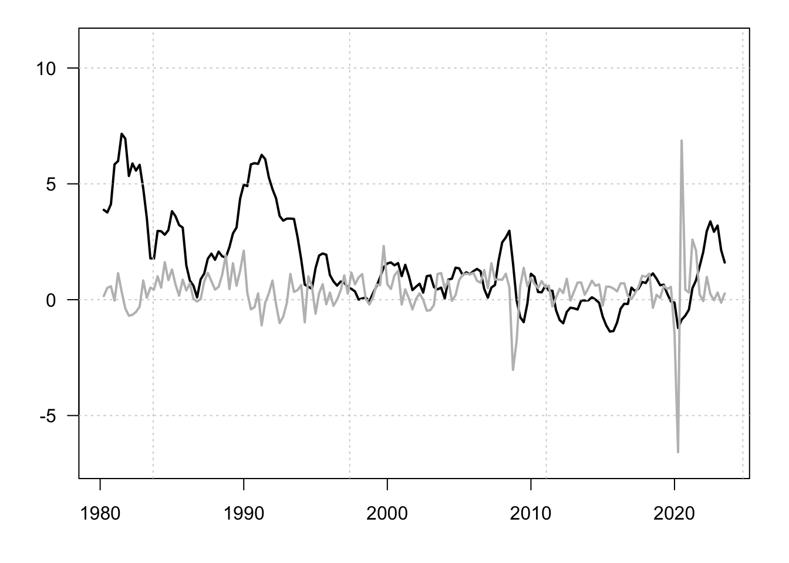
Figure 1.7: Inflation and GDP growth rates. Percent change from year ago.
## Registered S3 method overwritten by 'quantmod':
## method from
## as.zoo.data.frame zooCode
## Warning in pp.test(Y[, 2]): p-value smaller than printed p-value## Warning in kpss.test(Y[, 1]): p-value smaller than printed p-value## Warning in kpss.test(Y[, 2]): p-value greater than printed p-valueCode
## [,1] [,2]
## test.adf 0.26339041 0.03910545
## test.pp 0.06972378 0.01000000
## test.kpss 0.01000000 0.10000000Estimate the model parameters for a given lag choice:
Check for residual autocorrelation (Portmanteau test) using the Portmanteau test or the one developed by Breusch (1978) and Godfrey (1978) (a high p-value indicates no evidence of serial correlation):
##
## Portmanteau Test (asymptotic)
##
## data: Residuals of VAR object estVAR
## Chi-squared = 63.047, df = 72, p-value = 0.7653##
## Breusch-Godfrey LM test
##
## data: Residuals of VAR object estVAR
## Chi-squared = 35.853, df = 20, p-value = 0.016Let us now test for heteroskedasticity that would take place in the form of ARCH (see Engle (1982)). For that, we ca use the arch.test function (a high p-value suggests no ARCH effects):
##
## ARCH (multivariate)
##
## data: Residuals of VAR object estVAR
## Chi-squared = 128.59, df = 108, p-value = 0.0861Normality test can be perform using function normality.test (a high p-value suggests residuals are consistent with normality):
## $JB
##
## JB-Test (multivariate)
##
## data: Residuals of VAR object estVAR
## Chi-squared = 2555.7, df = 4, p-value < 2.2e-16
##
##
## $Skewness
##
## Skewness only (multivariate)
##
## data: Residuals of VAR object estVAR
## Chi-squared = 39.143, df = 2, p-value = 3.164e-09
##
##
## $Kurtosis
##
## Kurtosis only (multivariate)
##
## data: Residuals of VAR object estVAR
## Chi-squared = 2516.6, df = 2, p-value < 2.2e-161.5 Block exogeneity and Granger causality
1.5.1 Block exogeneity
In an unconstrained VAR model, where the coefficient matrices \(\Phi_i\) are full, all lags of all endogenous variables may affect all current endogenous variables. However, in some situations one may suspect causal structures in which a subset of variables influences the others, but not the reverse. In such cases, the VAR can be formulated with block exogeneity restrictions.
Let us partition \(y_t\) into two subvectors \(y^{(1)}_{t}\) (\(n_1 \times 1\)) and \(y^{(2)}_{t}\) (\(n_2 \times 1\)), such that \(y_t' = [{y^{(1)}_{t}}',{y^{(2)}_{t}}']\) and \(n = n_1 + n_2\). Then the VAR(1) representation can be written as \[ \begin{bmatrix} y^{(1)}_{t} \\ y^{(2)}_{t} \end{bmatrix} = \begin{bmatrix} \Phi^{(1,1)} & \Phi^{(1,2)} \\ \Phi^{(2,1)} & \Phi^{(2,2)} \end{bmatrix} \begin{bmatrix} y^{(1)}_{t-1} \\ y^{(2)}_{t-1} \end{bmatrix} + \varepsilon_t. \]
Block exogeneity of \(y^{(2)}_t\) (i.e., \(y^{(2)}_t\) does not respond to past values of \(y^{(1)}_t\)) corresponds to the null hypothesis \[ \Phi^{(2,1)} = 0. \] This restriction can be tested using a likelihood ratio test (see Def. 11.2). The same logic extends straightforwardly to a VAR(\(p\)) model by imposing \(\Phi^{(2,1)}_i = 0\) for all \(i = 1,\dots,p\).
Consider a model of the joint dynamics of US and Korean GDP growth and inflation rates. Figure 1.8 shows the data used in the estimation.
Code
library(IdSS) # this package contains the data
library(vars) # this package contains standard VAR estimation tools
names.var <- c("GDP_USA","CPI_USA","GDP_KOR","CPI_KOR")
data <- international[,c("date",names.var)]
data <- data[complete.cases(data),]
Y <- data[,c("GDP_USA","CPI_USA","GDP_KOR","CPI_KOR")]
par(mfrow=c(1,2))
par(plt=c(.15,.95,.15,.8))
plot(data$date,data$GDP_KOR,type="l",lwd=2,las=1,
main="GDP growth rate (y-o-y)",xlab="",ylab="");grid()
lines(data$date,data$GDP_USA,col="grey",lwd=2,las=1)
plot(data$date,data$CPI_KOR,type="l",lwd=2,las=1,
main="Inflation (y-o-y)",xlab="",ylab="");grid()
lines(data$date,data$CPI_USA,col="grey",lwd=2,las=1)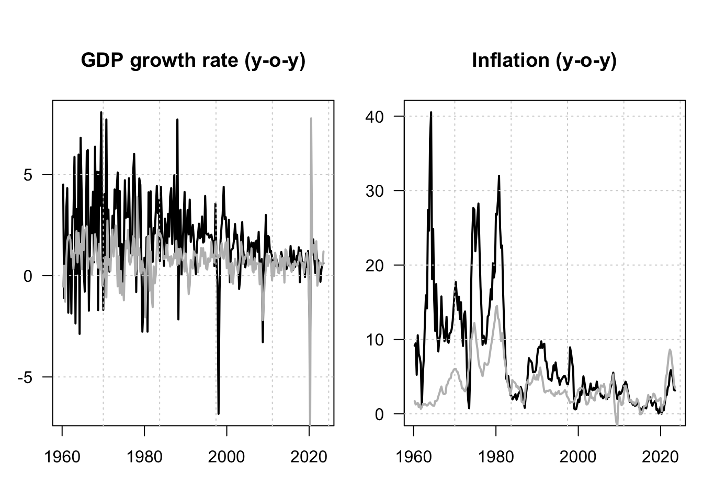
Figure 1.8: GDP log growth rates and inflation rates for the US and Korea. Black lines are for Korea; grey lines are for the US. All series are year-on-year growth rates, expressed in percent.
Let us first estimate an unrestricted VAR(\(p\)) model using these data.
The model log-likelihood is stored in L0.
Let us now estimate a retricted model:
Code
The model log-likelihood is stored in Lrestr. We can perform a Likelihood Ratio (LR) test to see whether the data call for the exogeneity of the US variables. According to its definition (Def. 11.2), the LR test statistics is given by:
\[
\xi^{LR} =2 \times (\hat{L} - \hat{L}^*),
\]
where \(\hat{L}\) and \(\hat{L}^*\) are, respectively, the unrestricted and restricted maximum log-likelihoods. Under the null hypothesis that the block exogeneity is satisfied, we have:
\[
\xi^{LR} \sim \chi^2\left[p\left(\frac{n}{2}\right)^2\right].
\]
In our context, we can therefore apply the test as follows:
Code
## [1] 0.3977775Hence, the test cannot reject the null hypothesis of block exogeneity since the p-value is larger than conventional thresholds. In terms or coding, we could have used, equivalently, the lrtest function to perform this test:
## Likelihood ratio test
##
## Model 1: VAR(y = Y, p = p)
## Model 2: VAR(y = Y, p = p)
## #Df LogLik Df Chisq Pr(>Chisq)
## 1 68 -1685.5
## 2 52 -1693.9 -16 16.813 0.3978Let us compare the IRFs in both models (w/ and w/o block exogeneity). In Figure 1.9, the grey lines correspond to a contrained model, where Korean variables do not affect US ones. (In other words, in the restricted model, US variables are exogenous.) Notice that, in the restricted model, the last two shocks (\(\eta_{3,t}\) and \(\eta_{4,t}\)) do not affect US variables.
Code
# Unrestricted model:
Phi <- Acoef(estVAR)
eps <- residuals(estVAR)
Omega <- var(eps) # covariance matrix of OLS residuals
B <- t(chol(Omega)) # Cholesky decomposition of Omega (lower triangular)
# Restricted model:
Phi_restr <- Acoef(estVARrestr)
eps_restr <- residuals(estVARrestr)
Omega_restr <- var(eps_restr)
B_restr <- t(chol(Omega_restr))
par(mfrow = c(n, n))
par(plt = c(.35, .97, .25, .68))
Model <- list(c = c, Phi = Phi, B = B)
for (shock in 1:n) {
eta0 <- rep(0, n)
eta0[shock] <- 1
res.sim <- simul.VAR(c = NaN, Phi, B, nb.sim = 30, indic.IRF = 1,
u.shock = eta0)
res.sim_restr <- simul.VAR(c = NaN, Phi_restr, B_restr, nb.sim = 30,
indic.IRF = 1,u.shock = eta0)
for (variable in 1:n) {
plot(res.sim[, variable], type = "l", lwd = 2, las = 1,
ylab = ifelse(variable==1,
paste("Shock η", shock, sep = ""),""),xlab="",
main = ifelse(shock==1,
paste("Resp. of ", names.var[variable],sep = ""),""))
lines(res.sim_restr[, variable], type = "l", lwd = 2,col="grey")
}
}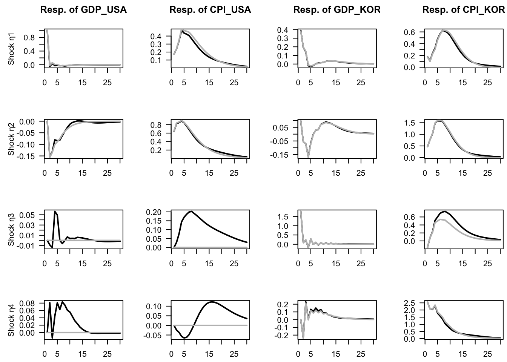
Figure 1.9: Impulse response functions in the context of VAR models depicting the joint dynamics of US and Korean GDP growth and inflation rates. Structural shocks are identified by using the Cholesky decomposition. The grey lines correspond to a contrained model, where Korean variables do not affect US ones. (In other words, in the restricted model, US variables are exogenous.)
Finally, let us compute the variance decomposition in both models. Let us start with the unrestricted model:
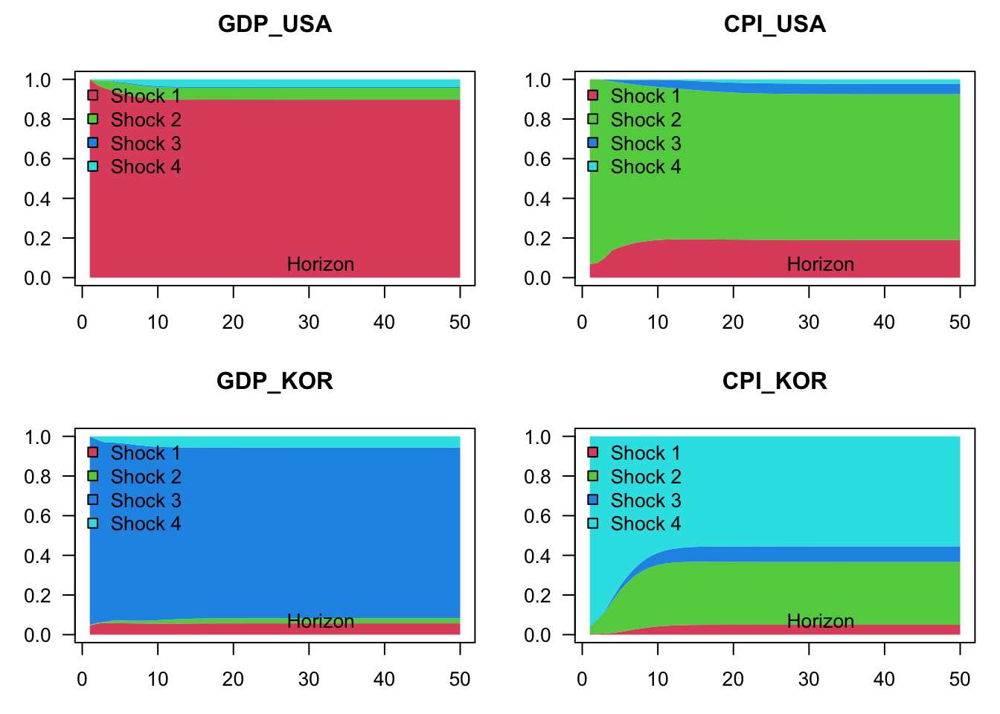
Figure 1.10: Variance decomposition in the context of a VAR model depicting the joint dynamics of US and Korean GDP growth and inflation rates. Structural shocks are identified by using the Cholesky decomposition. The grey lines correspond to a contrained model, where Korean variables do not affect US ones. (In other words, in the restricted model, US variables are exogenous.)
Figure 1.11 shows the variance decomposition in the context of the restricted model, that entails block exogeneity:
Code
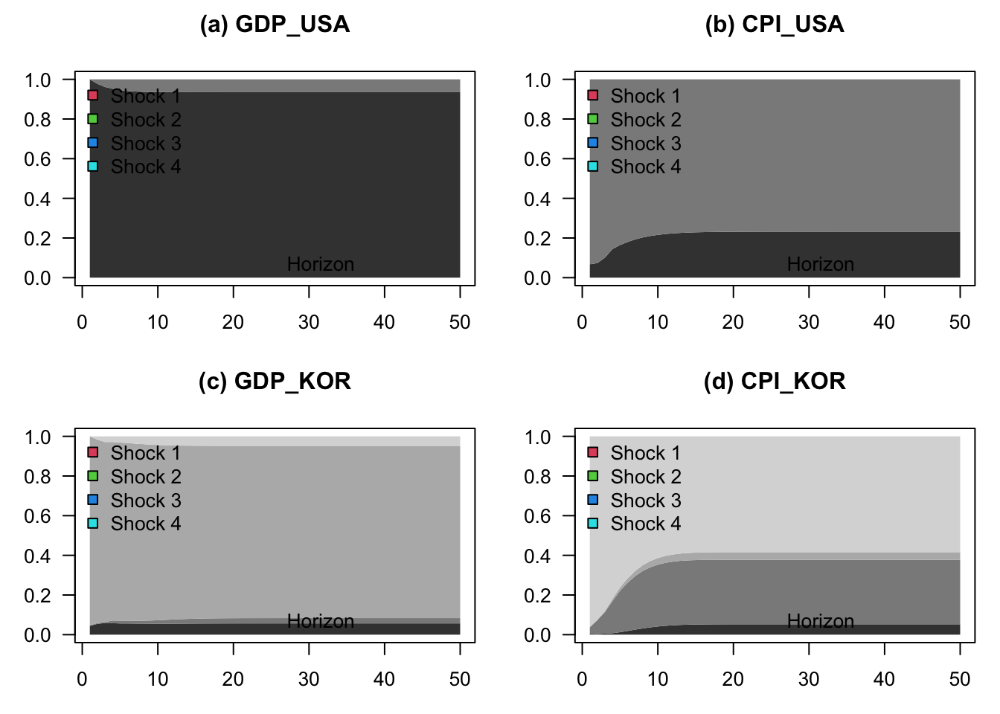
Figure 1.11: Variance decomposition in the context of a VAR model depicting the joint dynamics of US and Korean GDP growth and inflation rates. Structural shocks are identified by using the Cholesky decomposition. The model is contrained in such a way that Korean variables do not affect US ones. (In other words, in this restricted model, US variables are exogenous.)
1.5.2 Granger Causality
Granger (1969) developed a method to explore causal relationships among variables. The approach consists in determining whether the past values of \(y_{1,t}\) can help explain the current \(y_{2,t}\) (beyond the information already included in the past values of \(y_{2,t}\)).
Formally, let us denote three information sets: \[\begin{eqnarray*} \mathcal{I}_{1,t} & = & \left\{ y_{1,t},y_{1,t-1},\ldots\right\} \\ \mathcal{I}_{2,t} & = & \left\{ y_{2,t},y_{2,t-1},\ldots\right\} \\ \mathcal{I}_{t} & = & \left\{ y_{1,t},y_{1,t-1},\ldots y_{2,t},y_{2,t-1},\ldots\right\}. \end{eqnarray*}\] We say that \(y_{1,t}\) Granger-causes \(y_{2,t}\) if \[ \mathbb{E}\left[y_{2,t}\mid \mathcal{I}_{2,t-1}\right]\neq \mathbb{E}\left[y_{2,t}\mid \mathcal{I}_{t-1}\right]. \]
To get the intuition behind the testing procedure, consider the following bivariate VAR(\(p\)) process: \[\begin{eqnarray*} y_{1,t} & = & c_1+\Sigma_{i=1}^{p}\Phi_i^{(11)}y_{1,t-i}+\Sigma_{i=1}^{p}\Phi_i^{(12)}y_{2,t-i}+\varepsilon_{1,t}\\ y_{2,t} & = & c_2+\Sigma_{i=1}^{p}\Phi_i^{(21)}y_{1,t-i}+\Sigma_{i=1}^{p}\Phi_i^{(22)}y_{2,t-i}+\varepsilon_{2,t}, \end{eqnarray*}\] where \(\Phi_k^{(ij)}\) denotes the element \((i,j)\) of \(\Phi_k\). Then, \(y_{1,t}\) is said not to Granger-cause \(y_{2,t}\) if \[ \Phi_1^{(21)}=\Phi_2^{(21)}=\ldots=\Phi_p^{(21)}=0. \] The null and alternative hypotheses therefore are: \[ \begin{cases} H_{0}: & \Phi_1^{(21)}=\Phi_2^{(21)}=\ldots=\Phi_p^{(21)}=0\\ H_{1}: & \Phi_1^{(21)}\neq0\mbox{ or }\Phi_2^{(21)}\neq0\mbox{ or}\ldots\Phi_p^{(21)}\neq0.\end{cases} \] Loosely speaking, we reject \(H_{0}\) if some of the coefficients on the lagged \(y_{1,t}\)’s are statistically significant. Formally, this can be tested using the \(F\)-test or asymptotic chi-square test. The \(F\)-statistic is \[ F=\frac{(RSS-USS)/p}{USS/(T-2p-1)}, \] where RSS is the Restricted sum of squared residuals and USS is the Unrestricted sum of squared residuals. Under \(H_{0}\), the \(F\)-statistic is distributed as \(\mathcal{F}(p,T-2p-1)\) (See Table 11.4).6
According to the following lines of code, the output gap Granger-causes inflation, but the reverse is not true:
## Granger causality test
##
## Model 1: infl ~ Lags(infl, 1:3) + Lags(y.gdp.gap, 1:3)
## Model 2: infl ~ Lags(infl, 1:3)
## Res.Df Df F Pr(>F)
## 1 214
## 2 217 -3 3.9761 0.008745 **
## ---
## Signif. codes: 0 '***' 0.001 '**' 0.01 '*' 0.05 '.' 0.1 ' ' 1## Granger causality test
##
## Model 1: y.gdp.gap ~ Lags(y.gdp.gap, 1:3) + Lags(infl, 1:3)
## Model 2: y.gdp.gap ~ Lags(y.gdp.gap, 1:3)
## Res.Df Df F Pr(>F)
## 1 214
## 2 217 -3 1.5451 0.2038References
The lag operator \(L\) transforms a process into a lagged process; e.g., \(L y_t = y_{t-1}\), and \(L^k y_t = y_{t-k}\), where \(k \in \mathbb{N}\).↩︎
In that case,
res.simis of dimensionnb.sim\(\times n\).↩︎For VAR models, this information set coincides with \(\{y_t,y_{t-1},\ldots\}\). For VARMA models, this equivalence holds only if the model is fundamental, meaning that the moving-average operator \(\Theta(L)\) is invertible—i.e., \(\det(\Theta(z))\neq0\) for all \(|z|\le1\), so that the innovations can be recovered from current and past \(y_t\).↩︎
The estimation of VARMA models is introduced in Appendix 11.2.↩︎
That is, these shocks are such that \(\mathbb{E}(\varepsilon_{t})=0\), and \(\mathbb{C}ov(\varepsilon_{t},\varepsilon_{t-k})=\Omega\) if \(k=0\), and a zero matrix if \(k \ne 0\).↩︎
We have \(pF\underset{T \rightarrow \infty}{\rightarrow}\chi^{2}(p)\).↩︎